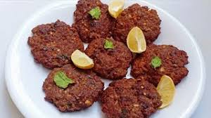
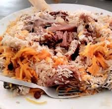

Recipe
Tira Kabab
Ingredients:

- 1 lb ground beef
- 1/2 cup breadcrumbs
- 1/4 cup chopped onion
- 2 cloves garlic, minced
- 1 tsp cumin
- 1 tsp coriander
- 1/2 tsp paprika
- Salt and pepper to taste
Instructions:
- Mix all ingredients in a large bowl.
- Form the mixture into small patties or skewer onto sticks.
- Cook on a grill or stovetop until fully cooked, about 4-5 minutes per side.
- Serve hot with your favorite side dishes.
Shinwari Pulao
Ingredients:

- 2 cups Basmati rice
- 500g lamb or beef, cut into chunks
- 1 large onion, thinly sliced
- 4 cloves garlic, minced
- 1 inch ginger, grated
- 1/4 cup cooking oil
- 1 tsp cumin seeds
- 1 tsp coriander powder
- 1 tsp black pepper
- 1 tsp red chili flakes (adjust to taste)
- Salt to taste
- 4 cups water
Instructions:
- Wash and soak the rice in water for 30 minutes. Drain and set aside.
- Heat oil in a large pot. Add cumin seeds and let them splutter.
- Add sliced onions and cook until golden brown.
- Add garlic and ginger, sauté for a minute.
- Add meat and cook until it changes color.
- Stir in coriander powder, black pepper, red chili flakes, and salt. Cook for a few minutes.
- Add soaked rice and cook for another 2-3 minutes.
- Pour in water, bring to a boil, then reduce heat to low. Cover and let it simmer for 20-25 minutes or until rice is cooked and water is absorbed.
- Fluff the rice with a fork and serve hot.